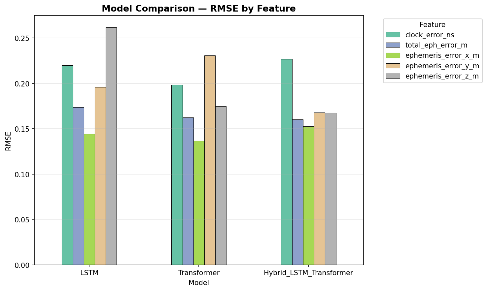
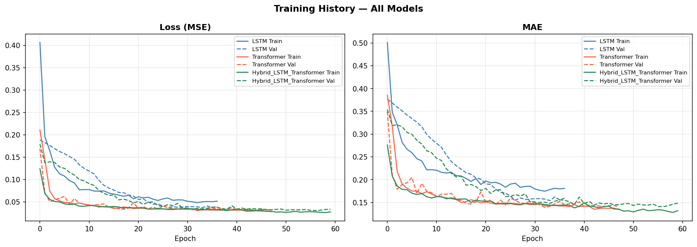

Problem
Predict GNSS broadcast-model mismatch errors across multiple validity windows.
M.Tech AI Research Project
Hybrid LSTM-Transformer for time-varying satellite clock and ephemeris error analysis.
Predict GNSS broadcast-model mismatch errors across multiple validity windows.
LSTM baseline, Transformer, and Hybrid LSTM-Transformer architecture.
RMSE, MAE, R², prediction plots, and error-distribution analysis.
These plots are generated by the training pipeline and stored in the repository.


GitHub Pages hosts static content only. For the interactive Flask dashboard, run locally with Python or deploy backend to Render/Railway.
python src/web_app/app.py